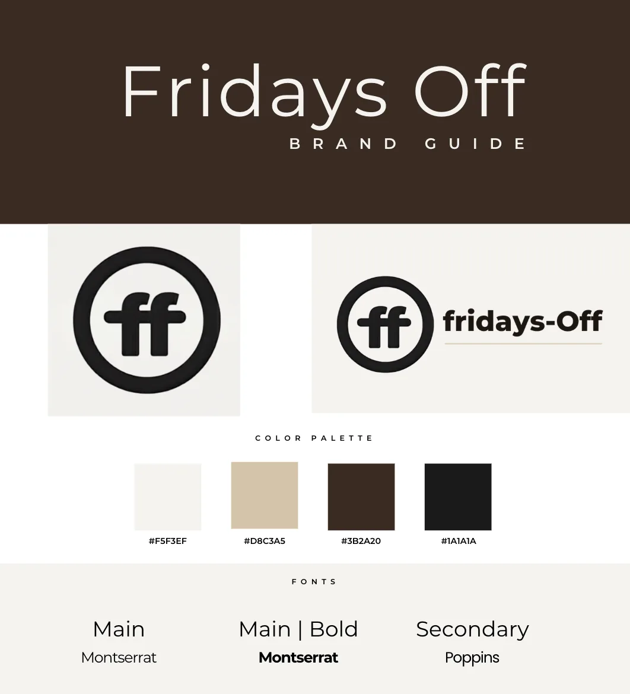
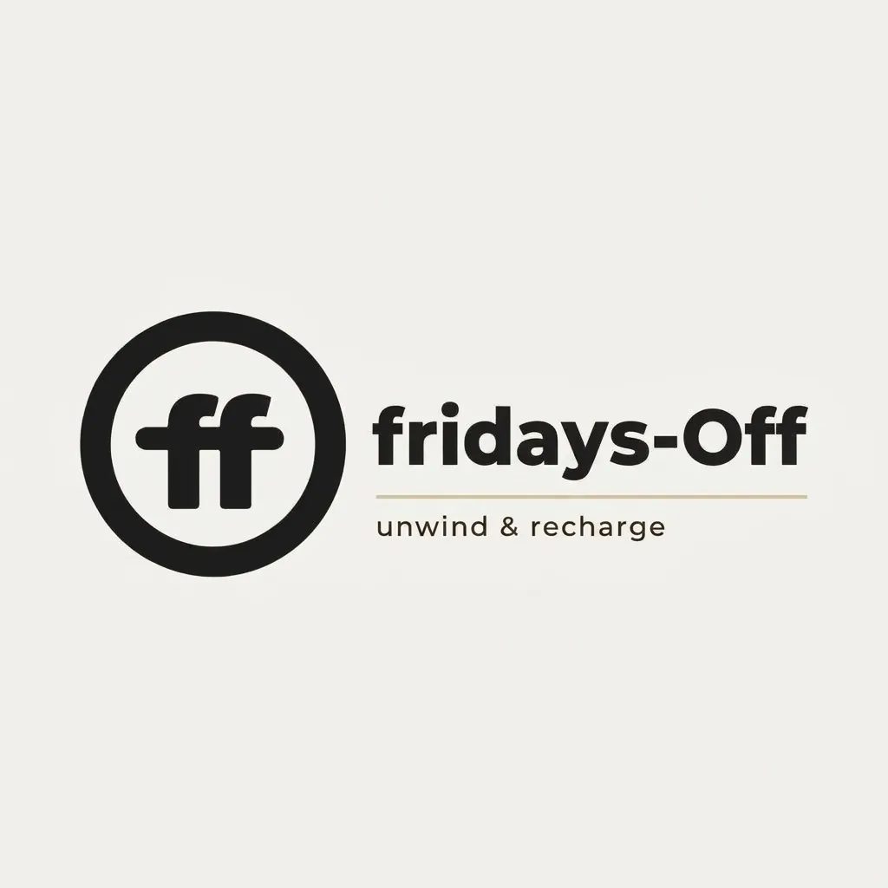
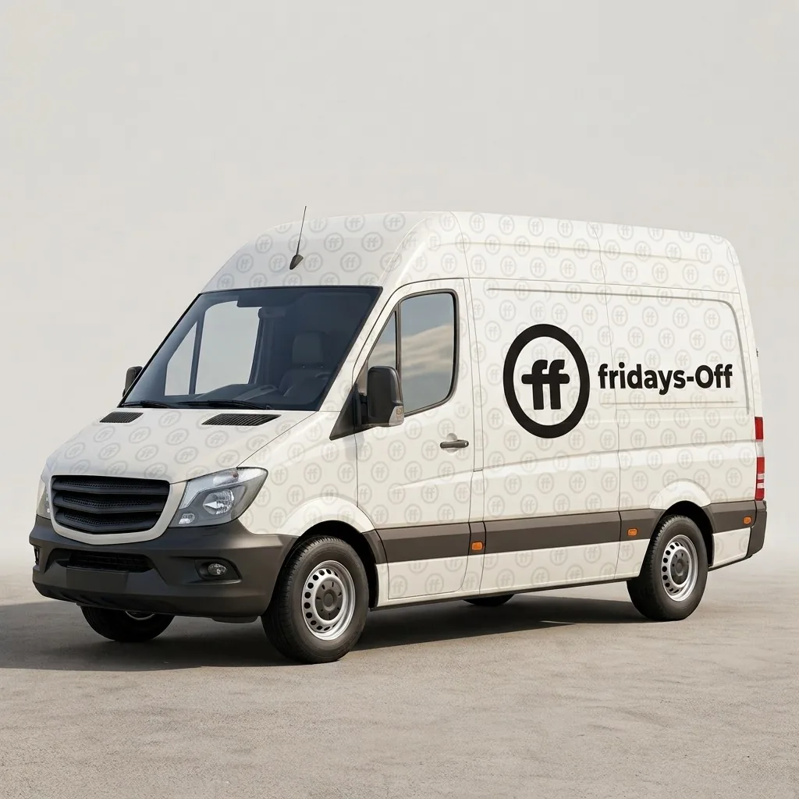
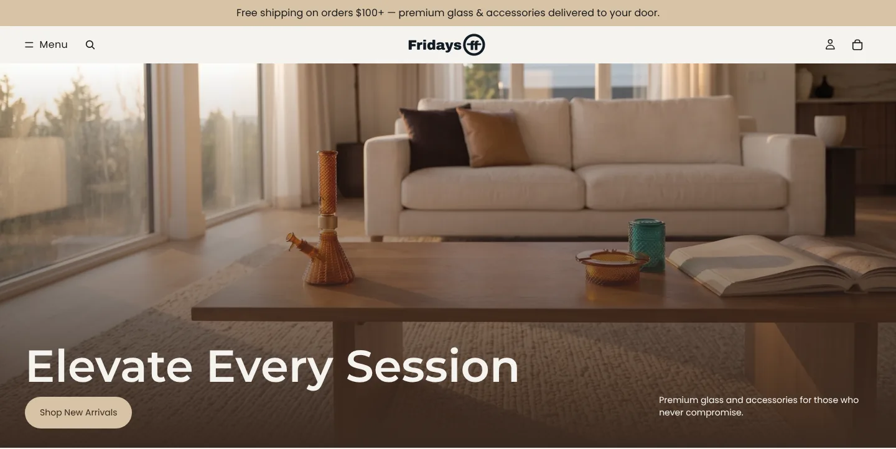
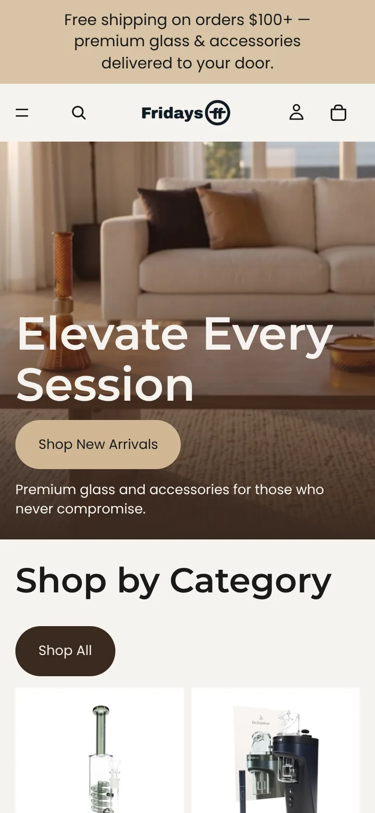
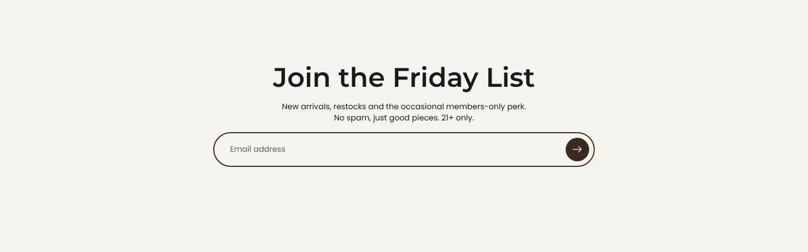

| My role | Co-founder. I designed the brand with my co-founder, then built the entire website and led marketing design and automation. |
| Scope | Brand identity · Shopify store design and build · Information architecture · Accessibility · AI content pipeline |
| Tools | Shopify · Claude + Claude Code · Higgsfield · Notion · Blotato |
| Catalog | 460+ products from ~48 brands |
| Status | Live at fridays-off.co, social launch in progress |
The idea
Most online shops in this space feel cluttered, loud and cheap. Fridays-Off is the opposite: a Louis Vuitton-level experience for lifestyle products and home goods. It's a curated store for well-made, beautiful pieces, for people who care how things look on their shelf as much as how they work.
For my co-founder and me, it's also personal: a business we're building on our own terms.
Who does what
| Me | My co-founder |
|---|---|
| Brand identity (together) | Brand identity (together) |
| Designed and built the entire website | Logistics and suppliers |
| Accessibility | Product research |
| Launch design assets | Copy and brand voice |
| Marketing execution + automation | Marketing strategy, UX feedback |
1. The brand: quiet luxury
Research first. We studied how Louis Vuitton and leading premium lifestyle brands present products online, then borrowed the best patterns: lots of whitespace, editorial photography, and calm, confident type.
The identity - Mark: a circle around an "ff" ligature that works as a logo, a stamp and a repeating pattern - Name styling: Fridays-Off, with a capital F and a capital O. The hyphen stays, and on merch, "F-Off" becomes a wink. - Tagline: unwind & recharge - Type: Montserrat (main and bold), Poppins (secondary) - Palette: warm neutrals that read as luxury
| Cream | Sand | Espresso | Near-black |
|---|---|---|---|
#F5F3EF |
#D8C3A5 |
#3B2A20 |
#1A1A1A |



2. The store: 460+ products that still feel curated
Information architecture. A big catalog can feel like a warehouse. I organized 460+ products from ~48 brands into three simple shopping pillars, each with clear sub-categories, so any product is at most two taps away.
On top of those: Shop by Brand, New Arrivals, Best Sellers, Travel Essentials and Lifestyle & Gifts, so people can browse by mood, brand or need.
The homepage reads like a magazine, not a catalog: hero → Shop by Category → New Arrivals → our story → Best Sellers → Shop by Brand → Travel Essentials → "The Art of the Ritual" → Join the Friday List.
Product pages have a large gallery, clear specs, Shop Pay installments, trust tiles, and accordions for details and shipping, so the page stays clean while every answer is one tap away.



Responsible by design. An age verification gate greets every visitor, and the email signup repeats the age requirement.
How I built it. I explored three Shopify themes (Savor, Fabric and Tinker), chose Tinker, and customized it in the Shopify editor. For deeper changes I paired with Claude to write custom CSS and theme code, which let a team of two ship a custom-feeling store without hiring a developer.
3. Accessible, always
Accessibility wasn't a final check. It was a requirement from day one.
- Keyboard navigation and screen-reader support across the store
- Minimal layouts to avoid cognitive overload
- Color contrast checked against WCAG:
| Pair | Contrast | Result |
|---|---|---|
| Near-black on cream | 15.7 : 1 | ✅ AAA |
| Espresso on cream | 12.3 : 1 | ✅ AAA |
| Sand on near-black | 10.2 : 1 | ✅ AAA |
| Espresso on sand | 8.0 : 1 | ✅ AAA |
| Sand on cream | 1.5 : 1 | Decoration only, never text |
4. The AI content engine
A two-person team can't shoot hundreds of lifestyle photos. So I built a content pipeline that keeps everything on-brand:
Brand style guide + Notion reference library (curated by my co-founder)
↓
Claude writes consistent image prompts
↓
Higgsfield generates on-brand product imagery
↓
Blotato schedules the week's posts automatically
The Notion library of motion and art references is what keeps the images from looking "AI-generated." Every prompt is anchored to real visual references and to our style guide. The goal is a hands-free content week: plan once, and the system publishes.
On the website we use curated supplier photography. On social, we use the AI-generated editorial imagery, so both channels match one visual language.
5. Keeping the store healthy
Dropshipping hundreds of products from dozens of brands creates mess: duplicate brand names, duplicate categories, empty brand pages. I cleaned up the duplicates and set up an automated weekly store check that reports issues before customers ever see them.
Status and early feedback
- The store is live at fridays-off.co. The social launch is underway.
- In soft-launch previews, people loved the aesthetic, the photography and the overall vibe.
What I learned
- Systems beat hustle. The brand guide, the IA and the content pipeline do the work of a much bigger team.
- Luxury is mostly restraint: fewer colors, more whitespace, calmer type.
- AI is a collaborator, not a shortcut. It's only as good as the references and rules you give it.
- Next: measure everything from day one, and A/B test the homepage hero and product page layout once traffic comes in.